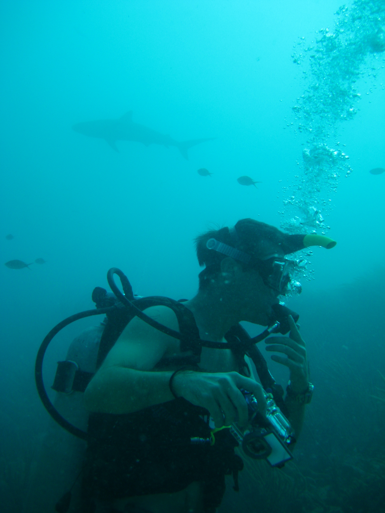

I've had my scuba diving ticket now for around 20 years. First getting my Open Water diving certificate
from Kirra Dive at Tweed Heads. I was walking with my friend and was sure that you had to have negative
bouyancy for diving.
Naomi (who was much much smarter than I) pointed out that if you were negatively
bouyant, you could not come back up. So we went in to ask the professionals.
Turns out she was right
(who knew someone with a PhD would have better deduction skills than me?).
So from there I decided I should sign-up for a course, in the middle of winter. This turned out to be a kind
of blessing, as I was the only one in the class which meant I got the full attention of instructor. Anyway
from there I got my Advanced Open Waters, Rescue Diver and Enriched Air tickets from various locations.

It's video games. I like to play video games.
Currently (if I ever get free time) I'm playing through Days Gone by Bend Studio on the Playstation 5.
I also have Diablo IV on the Xbox: Series X but again I just need the time.
I started this course to help with our massage shop HiQi and create a website. As it turns out it's actually enjoyable
to be able to create (at this time) very simple websites. Plus it will also save me anywhere between $1000 - $5000
by not having to hire another company to complete it.
Here are a couple of screen shots of my code when building this website.
Only and all in HTML as per the directions from the course.
As with most jobs and positions, ongoing education is a requisite to remain compedent within the industry. Like within the Correcitonal Centre and Remedial Massage
industry having a current First Aid Certificate is a neccessity and ensuring that my CPR skills remain current every 12 months. Outside of these I like to participate
in general up-skilling. So far I've completed additional certificates and training in: